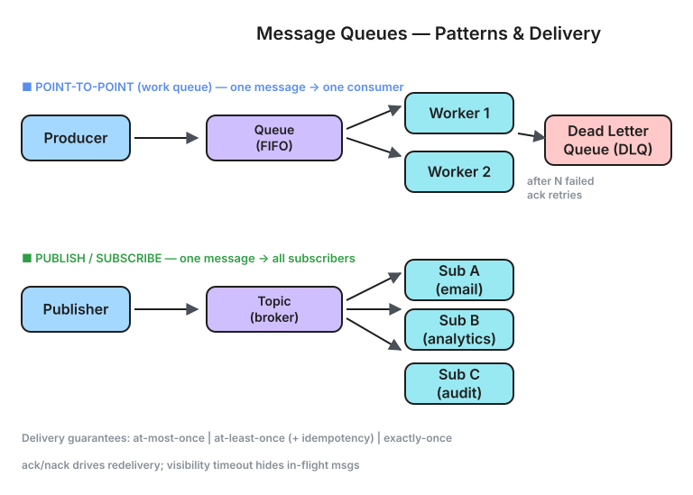

Internal architecture, delivery semantics, when to use what, and the top interview questions — from RabbitMQ to Kafka to SQS.
Producer A ──┐ ┌── Consumer X Producer B ──┼──→ [ MESSAGE QUEUE ] ──→──┼── Consumer Y Producer C ──┘ (durable, ordered) └── Consumer Z
Core Properties
| Problem | Without Queue | With Queue |
|---|---|---|
| Traffic spike (10x load) | Backend overwhelmed, 503s | Queue absorbs spike, consumer drains at steady rate |
| Slow downstream service | Request times out, user sees error | Message queued, processed when downstream recovers |
| Service coupling | Order Service directly calls Email, SMS, Analytics... | Order Service publishes event, each consumer subscribes independently |
| Data loss on crash | In-memory request lost | Message persisted to disk, redelivered after restart |
| Ordering guarantees | Concurrent threads → race conditions | Single partition → strict ordering |
| Retry/failure handling | Complex retry logic in app code | Queue redelivers on NACK, DLQ on repeated failure |
High-Level Architecture
┌───────────────────────────────────────────────────────────────────┐ │ KAFKA CLUSTER │ │ │ │ ┌──────────┐ ┌──────────┐ ┌──────────┐ │ │ │ Broker 0 │ │ Broker 1 │ │ Broker 2 │ │ │ │ │ │ │ │ │ │ │ │ Topic A │ │ Topic A │ │ Topic A │ │ │ │ Part 0 │ │ Part 1 │ │ Part 2 │ ← Partitions │ │ │ (leader) │ │ (leader) │ │ (leader) │ spread across │ │ │ │ │ │ │ │ brokers │ │ │ Topic A │ │ Topic A │ │ Topic A │ │ │ │ Part 1 │ │ Part 2 │ │ Part 0 │ ← Replicas │ │ │ (replica)│ │ (replica)│ │ (replica)│ for durability │ │ └──────────┘ └──────────┘ └──────────┘ │ │ │ │ ┌──────────────────────────────────────────┐ │ │ │ ZooKeeper / KRaft (Controller) │ │ │ │ ─ Leader election │ │ │ │ ─ Broker membership │ │ │ │ ─ Topic/partition metadata │ │ │ └──────────────────────────────────────────┘ │ └───────────────────────────────────────────────────────────────────┘

⬇ Download Interactive Diagram (.excalidraw) ↗ Open in Excalidraw
What Is a Partition?
Topic "order-events", Partition 0:
Offset: 0 1 2 3 4 5 6 7
┌─────┬─────┬─────┬─────┬─────┬─────┬─────┬─────┐
│msg0 │msg1 │msg2 │msg3 │msg4 │msg5 │msg6 │msg7 │ → (append-only)
└─────┴─────┴─────┴─────┴─────┴─────┴─────┴─────┘
↑ ↑
Consumer A Producer writes
(offset 5) here (offset 7)
─ Append-only log (immutable once written)
─ Each message has a unique OFFSET (sequential number)
─ Consumer tracks its own offset ("I've read up to 5")
─ Messages are NOT deleted after consumption (retained by time/size policy)
How a Message Gets Written (Producer Path)
Producer:
1. Serialize message (key + value + headers)
2. Determine partition:
─ If key exists: partition = hash(key) % num_partitions
─ If no key: round-robin across partitions
3. Send to the LEADER broker for that partition
4. Leader writes to local log (page cache → disk)
5. Replicas FETCH from leader and write to their logs
6. Once min.insync.replicas confirm → leader ACKs producer
ACK modes (acks config):
acks=0 → fire-and-forget (fastest, may lose data)
acks=1 → leader wrote to its log (one broker confirms)
acks=all→ all ISR replicas confirmed (safest, slowest)
How a Message Gets Read (Consumer Path)
Consumer:
1. Subscribe to topic (joins a Consumer Group)
2. Coordinator assigns partitions to consumers in the group
3. Consumer sends FETCH request to leader of its assigned partition(s)
4. Reads from the offset it last committed
5. Processes message
6. Commits offset (manual or auto):
─ Auto-commit: every 5s (default), may lose/re-read on crash
─ Manual commit: after processing (at-least-once guarantee)
On-Disk Storage (Segment Files)
/var/kafka/topic-order-events/partition-0/ ├── 00000000000000000000.log ← messages offset 0-15231 ├── 00000000000000000000.index ← sparse offset → byte position ├── 00000000000000015232.log ← messages offset 15232-... ├── 00000000000000015232.index └── ... ─ Segments roll over at 1GB or 7 days (configurable) ─ Old segments deleted after retention period ─ Sequential disk I/O → extremely fast writes (no random seeks) ─ Uses OS page cache (no JVM heap for message storage) ─ Zero-copy: sendfile() transfers directly from page cache to NIC
| Semantic | Meaning | How | Risk |
|---|---|---|---|
| At-most-once | Message delivered 0 or 1 times | Commit offset BEFORE processing. If consumer crashes mid-process, message is lost. | Data loss |
| At-least-once | Message delivered 1 or more times | Commit offset AFTER processing. If consumer crashes after processing but before commit → redelivery → duplicate. | Duplicates |
| Exactly-once | Message delivered exactly 1 time | Kafka transactions (producer) + idempotent consumer (dedup on consume side) | Higher latency, more complex |
At-most-once: commit offset → process → CRASH → message gone, never retried At-least-once: process → CRASH → restart → re-read same message → duplicate Exactly-once: process + commit offset + write result ALL in one atomic operation (Kafka transactions / consume-transform-produce pattern)
One message → one consumer. Multiple consumers compete for messages. Used for task distribution.
RabbitMQ queue, SQS, Kafka single consumer group
One message → all subscribers. Each subscriber gets a copy. Used for event broadcasting.
Kafka multiple consumer groups, SNS, Redis Pub/Sub
POINT-TO-POINT (competing consumers):
Producer → [Queue] → Consumer A picks msg1
→ Consumer B picks msg2
→ Consumer A picks msg3
(each message processed by exactly ONE consumer)
PUB/SUB (fan-out):
Producer → [Topic] → Consumer Group 1 (Payment) gets ALL messages
→ Consumer Group 2 (Notification) gets ALL messages
→ Consumer Group 3 (Analytics) gets ALL messages
(each group gets every message independently)
STREAMING:
Producer → [Topic, Partition 0] → msg0, msg1, msg2... (ordered stream)
Consumer reads at its own pace, can replay from any offset
Messages retained for days (not deleted after consumption)
| Pattern | Use Case | Technology |
|---|---|---|
| Point-to-Point | Job processing, email sending, image resizing | SQS, RabbitMQ, Celery |
| Pub/Sub | Event notification, microservice integration | Kafka, SNS+SQS, Google Pub/Sub |
| Streaming | Real-time analytics, CDC, log aggregation | Kafka, Kinesis, Pulsar |
| Feature | Kafka | RabbitMQ | SQS | Pulsar |
|---|---|---|---|---|
| Model | Distributed log | Message broker | Managed queue | Distributed log |
| Ordering | Per-partition | Per-queue (FIFO) | FIFO queue option | Per-partition |
| Throughput | Millions/sec | ~50K/sec | ~3K/sec (standard) | Millions/sec |
| Message retention | Days/weeks (configurable) | Until consumed + ACK | 14 days max | Tiered (hot+cold) |
| Replay | ✓ (seek to offset) | ✗ (message deleted after ACK) | ✗ | ✓ |
| Consumer model | Pull-based | Push-based (or pull) | Pull-based | Push + Pull |
| Delivery | At-least-once (exactly-once with txn) | At-least-once / at-most-once | At-least-once | Exactly-once (with txn) |
| Ops complexity | High (ZK/KRaft, partitions, ISR) | Medium | Zero (managed) | High (BookKeeper) |
| Best for | Event streaming, CDC, high throughput | Task queues, RPC, routing logic | Simple async jobs (AWS native) | Multi-tenant, geo-replication |
Topic: "order-events" (6 partitions) Consumer Group: "payment-workers" (3 consumers) Partition 0 ──→ Consumer A Partition 1 ──→ Consumer A Partition 2 ──→ Consumer B Partition 3 ──→ Consumer B Partition 4 ──→ Consumer C Partition 5 ──→ Consumer C Rules: ─ Each partition assigned to EXACTLY ONE consumer in a group ─ One consumer can handle MULTIPLE partitions ─ If consumers > partitions → some consumers sit idle ─ If consumer dies → its partitions rebalanced to others
Ordering Guarantee
Key = "order-123" → hash("order-123") % 6 = partition 2
msg: ORDER_CREATED (offset 0)
msg: PAYMENT_CAPTURED (offset 1)
msg: ORDER_COMPLETED (offset 2)
→ Consumer B reads them IN ORDER ✓
Key = "order-456" → hash("order-456") % 6 = partition 4
→ Goes to Consumer C (independent, parallel processing)
Consumer Group Rebalancing
Consumer C crashes: Before: A[P0,P1] B[P2,P3] C[P4,P5] After: A[P0,P1,P4] B[P2,P3,P5] ← automatic rebalance New consumer D joins: Before: A[P0,P1] B[P2,P3] C[P4,P5] After: A[P0,P1] B[P2] C[P4] D[P3,P5] ← rebalance
| Strategy | How | Used By |
|---|---|---|
| Unbounded buffer | Queue grows infinitely (disk). Consumer catches up later. | Kafka (retention-based) |
| Bounded buffer + block | Queue has max size. Producer blocks when full. | RabbitMQ (memory alarms), Java BlockingQueue |
| Drop messages | Oldest/newest messages dropped when full. | Redis Streams (MAXLEN), UDP-based systems |
| Rate limit producer | Broker rejects/throttles producers when overloaded. | Kafka quotas, SQS throttling |
| Scale consumers | Auto-scale consumer instances based on lag. | KEDA (Kubernetes), Lambda+SQS |
Consumer Lag (Kafka): Producer offset: 1,000,000 Consumer offset: 800,000 LAG = 200,000 messages behind If lag grows → scale up consumers (add more pods) If lag shrinks → scale down Monitoring: kafka-consumer-groups --describe Alert if lag > threshold (e.g., > 100K for > 5 min)
Normal flow:
Message → Consumer → Process → ACK → done ✓
Failure flow:
Message → Consumer → Process → ERROR
→ Retry 1 (backoff 1s) → ERROR
→ Retry 2 (backoff 5s) → ERROR
→ Retry 3 (backoff 30s) → ERROR
→ Move to DLQ (Dead Letter Queue)
→ Alert ops team
→ Original queue moves on (not blocked)
| Failure Type | Action | Example |
|---|---|---|
| Transient (network blip) | Retry with backoff | Payment gateway timeout |
| Poison message (bad data) | Send to DLQ immediately | Malformed JSON, unknown order_id |
| Downstream permanently down | Retry with DLQ after max attempts | Third-party API deprecated |
DLQ message example:
{
"original_topic": "order-events",
"original_partition": 2,
"original_offset": 45021,
"payload": { "type": "ORDER_CREATED", "order_id": "ord-789" },
"error": "PaymentGatewayTimeout after 3 retries",
"attempts": 3,
"first_failed_at": "2026-05-29T10:00:00Z",
"last_failed_at": "2026-05-29T10:01:30Z"
}
The Problem
At-least-once delivery means consumer MAY see the same message twice: 1. Consumer processes message (e.g., captures payment) 2. Consumer crashes BEFORE committing offset 3. Consumer restarts, re-reads same message 4. Processes again → DOUBLE CHARGE ❌
Solution: Idempotent Consumer
Consumer logic:
1. Read message
2. Check: "Have I processed this message_id before?"
→ Query dedup table: SELECT 1 FROM processed_messages WHERE id = ?
3. If YES → skip (already done)
4. If NO → process + INSERT into dedup table (same transaction as result)
┌────────────────────────────────────────────┐
│ PostgreSQL (consumer's DB) │
│ │
│ BEGIN TRANSACTION; │
│ -- business logic │
│ UPDATE orders SET status='CAPTURED' │
│ WHERE id='ord-123'; │
│ │
│ -- dedup record │
│ INSERT INTO processed_messages │
│ (message_id, processed_at) │
│ VALUES ('order-events-P2-45021', now())│
│ ON CONFLICT DO NOTHING; │
│ COMMIT; │
│ │
│ -- If this txn succeeds → safe to commit │
│ -- offset in Kafka │
└────────────────────────────────────────────┘
Kafka-Native Exactly-Once (Transactions)
Consume-Transform-Produce (Kafka Streams): 1. Read from input topic 2. Transform 3. Write to output topic + commit consumer offset ALL in a single Kafka transaction (atomic) producer.initTransactions(); producer.beginTransaction(); producer.send(outputRecord); producer.sendOffsetsToTransaction(consumedOffsets, consumerGroupId); producer.commitTransaction(); // If any step fails → entire transaction aborted → no partial state
• Producer and consumer have different speeds
• You need retry/failure isolation
• Fan-out to multiple consumers
• Async processing (user doesn't need instant result)
• Traffic spikes (buffer between services)
• Event sourcing / audit log
• Cross-service communication (microservices)
• Ordering guarantees needed
• User needs synchronous response (<100ms)
• Simple request-response (just use HTTP)
• Data is needed RIGHT NOW (use cache/DB directly)
• Two services on same machine (use function call)
• Message size is huge (>1MB; use blob storage + pointer)
• You need strong consistency (queue = eventual consistency)
• Team can't handle operational complexity
| Use Case | Queue? | Why |
|---|---|---|
| User clicks "Buy" → confirm order | No (sync) | User needs instant confirmation |
| After order confirmed → send email | Yes | Email can be 2-5s late, user doesn't wait |
| After order → capture payment | Yes | Async, retryable, isolated from user flow |
| Real-time chat messages | Maybe (WebSocket + queue for persistence) | Delivery needs to be real-time but also durable |
| Fetching user profile on page load | No | User waits for data, use DB/cache directly |
| Processing 10M uploaded images | Yes | Classic job queue: distribute work across workers |